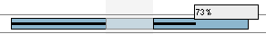

Intéractions sur les tâches
Déplacer une ou plusieurs tâches
Vous pouvez directement déplacer les tâches sur le graphique à l'aide de
la souris.
- sélectionnez une ou plusieurs tâches (pour sélectionner plusieurs tâches,
maintenez la touche CRTL enfoncée tout en cliquant sur les tâches
que vous voulez sélectionner) ;
- relâchez la touche CRTL si vous l'aviez enfoncée ;
- cliquez avec le bouton du milieu de la souris sur une des tâches
sélectionnées et maintenez le enfoncé ;
- déplacez votre souris (vers la droite ou la gauche) pour déplacer les
tâches sélectionnées ;
- relâchez le bouton du milieu de la souris à l'endroit où vous voulez
déposer les tâches.
ATTENTION : Une fois le bouton relâché, GanttProject
recalcule les dépendances entre les tâches, il se peut que certaines tâches soient
alors déplacées pour satisfaire les dépendances qui les concernent.
Modifier la durée d'une tâche
Vous pouvez modifier la durée d'une tâche directement sur le diagramme de Gantt
à l'aide de votre souris.
- déplacer le curseur de votre souris à l'une des extrémités du rectangle
représentant la tâche dont vous voulez modifier la durée ;
- un curseur particulier pour le redimensionnement apparaît ;
- cliquez sur le bouton gauche de votre souris et maintenez le enfoncé ;
- déplacer votre souris et relâchez le bouton pour modifier la durée de la tâche.
Modifier l'avancée d'une tâche
Vous pouvez modifier l'avancée d'une tâche directement sur le diagramme de Gantt
à l'aide de votre souris. L'avancée d'une tâche se matérialise par une barre noire
horizontale dans le rectangle représentant une tâche.

Pour modifier l'avancée d'une tâche :
- déplacez le curseur de votre souris sur la barre d'avancée (si l'avancée
est égale à 0 %, la barre est invisible, il faut déplacer votre souris à
l'extrémité gauche de la tâche) ;
- dès que le curseur apparaît maintenez
le bouton gauche de la souris enfoncé ;
- déplacez votre souris pour modifier l'avancée de la tâche.
Créer des relations entre tâches
Vous pouvez créer des relations entre tâches directement sur le diagramme de Gantt.
Cependant, les relations créer ainsi ne seront que du type Fin-Début initiallement.
- cliquez et maintenez le boutons gauche de la souris sur une tâche
(cette tâche précédera celle que vous indiquerez plus tard) ;
- déplacez votre souris sur la tâche qui doit dépendre de la première ;
- une flèche se dessine (img 1.);
- relâchez le bouton de la souris, la relation Fin-Début est créée (img 2.).